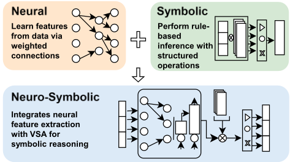
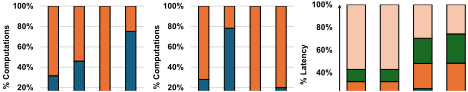
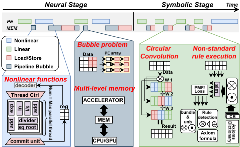
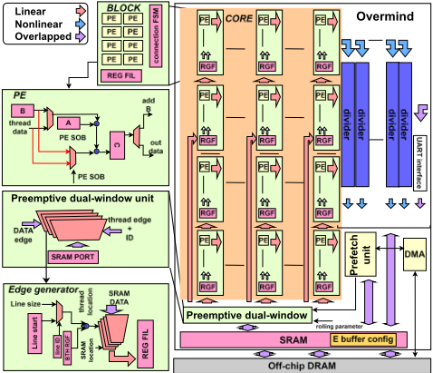
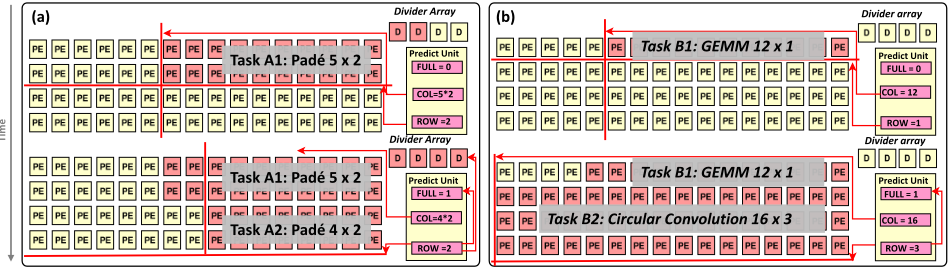
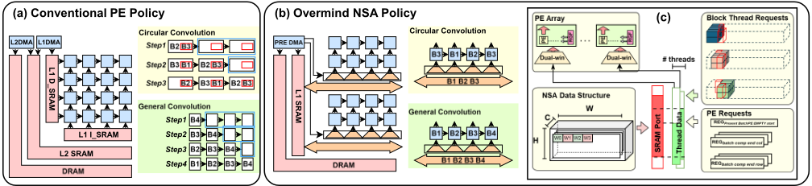
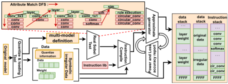
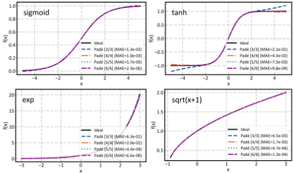
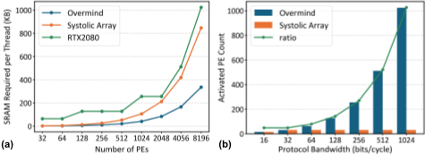

Overmind NSA：一种采用近似非线性激活与抢占式内存旁路的统一神经符号计算架构
论文针对神经符号 AI（NSA）工作负载在通用 GPU/NPU 上利用率低的问题：非线性运算占比高、符号操作呈大步长大工作集的 memory-bound 访存导致 cache 命中率低并引发 L2→L1 流水线停顿、循环卷积专用移位寄存器面积随向量维度扩展差。作者提出 Overmind NSA 统一架构：用 Padé 有理多项式近似在可重构 PE 阵列内以确定性延迟直接执行非线性函数；通过从张量元数据计算地址窗口的抢占式内存旁路取消 L2 cache，并以双窗口过滤和地址循环偏移免移位寄存器地支持循环卷积；配套编译器按用户精度目标自动选择 Padé 阶数并生成硬件配置。GF 22nm 综合的 32×16 PE 设计达到 410 GOPS@800MHz、8.1 TOPS/W，能效比 Xeon CPU 高 40.5×、比 RTX GPU 高 8×；Kintex-7 FPGA 上对比 NSFlow 片上内存减少 57.1×、同频吞吐提升 1.5×。
神经符号 AI（NSA）工作负载同时包含神经网络与符号推理运算，现有加速器存在三大瓶颈：(1) 非线性函数缺乏统一高效硬件支持，Taylor 级数收敛半径受限、LUT 消耗大量片上存储且造成数据流异构、迭代方法延迟不确定破坏流水线；(2) 符号操作（如 codebook 搜索的大步长访问）cache 命中率低，多级存储层级反而增加延迟并造成 L2→L1 传输流水线停顿；(3) 循环卷积依赖跨 PE lane 的移位寄存器，面积随向量维度扩展差且产生流水线气泡。
提出统一神经符号架构 Overmind，包含四个子系统（可重构 PE 阵列、高吞吐除法器阵列、双窗口抢占式单元、单级存储子系统）：(1) 近似非线性计算引擎——将非线性函数表示为 Padé 有理多项式，分子分母均为 MAC 运算，在 PE 阵列内并行求值、每行配一个除法器；通过指数累加复用内部寄存器、系数广播机制消除专用硬件；Padé 阶数可重配置，高阶精度高、低阶吞吐高，实现精度-性能伸缩；(2) 抢占式内存旁路——从指令携带的张量元数据（shape、stride、kernel size）直接计算 2D 有效地址窗口，取消 L2 cache，SRAM 经共享总线广播、每行用双窗口比较器过滤数据，控制器生成行使能掩码降低广播功耗；循环卷积通过对地址窗口施加循环偏移实现而无需移位寄存器；控制器预解码下一条指令并预加载窗口值以隐藏延迟；(3) 软件栈——编译器基于属性 DFS 遍历计算图，按用户精度约束迭代求满足要求的最小 Padé 阶数，生成含硬件配置参数的指令束，运行时按层动态重配置 PE 列、除法器、存储策略与功耗状态。
ASIC 综合（GlobalFoundries 22nm，Synopsys Design Compiler 综合、PrimeTime 功耗估计）：32 行×16 列 PE + 32KB 片上 SRAM 配置下，800 MHz 平均吞吐 410 GOPS（混合神经符号负载）
Padé=4 时能效 8.1 TOPS/W，比 Xeon CPU 高 40.5×、比 RTX GPU 高 8×
NVSA 模型上 Padé 阶数从 6 降到 3，吞吐约提升 2×，模型精度损失 0.6%
近似函数单元开销为 2.6% 功耗、5.7% 面积；旁路窗口过滤硬件占 14.5% 功耗、8% 面积，但移除片上 L2 cache 节省约 0.84 mm² SRAM 面积
FPGA（Kintex-7）端到端运行 NVSA 对比 NSFlow：片上内存减少 57.1×，同频吞吐提升 1.5×
RAVEN/I-RAVEN 数据集上端到端精度损失随 Padé 阶数升高而降低（Table 2）；非线性函数 MAE 随阶数升高改善（Fig. 8）
相对已有工作的区别：(1) 首次在统一 PE 阵列内以 Padé 有理近似直接执行非线性函数（确定性延迟、阶数可重配置），区别于 LUT/Taylor/迭代方法将其作为后处理步骤的做法；(2) 以元数据驱动的抢占式地址窗口旁路彻底取消 L2 cache，替代 cache 投机机制，并通过地址窗口循环偏移免移位寄存器地支持循环卷积（对比 CogSys 的专用移位寄存器方案）；(3) 编译器-运行时协同的按层硬件重配置与精度-性能自动权衡，新 NSA 模型无需硬件重新设计即可部署。对比对象包括 TPU、MTIA、CogSys、NSFlow、TinyNS。
相关度级别：low
命中能力域：无明显对应
理由：论文主体是面向神经符号 AI 的专用加速器架构，与团队服务的内存/互连 IP 产品线（LPDDR4/5X/6、DDR5/MRDIMM、HBM4、UCIe）无直接交集：不涉及 PHY/控制器/协议合规设计、UVM 验证、形式验证、仿真加速或验证自动化等团队能力域的核心技术或代表工程场景。论文虽使用与团队相同的 RTL 综合（Design Compiler）与功耗（PrimeTime）流程及 FPGA 平台，但均为标准流程应用而非方法学贡献。仅存在弱关联参考价值：其算子级 profiling（PyTorch profiler、cycle-accurate 操作数与访存模式统计）驱动架构决策的流程与 2.1 中 workload-driven 性能建模的通用思路同源；其'用元数据计算地址窗口替代 cache 投机'的访存层级简化思想，以及揭示的加速器类客户负载访存特征（大步长、低局部性、memory-bound），可作为内存控制器/PHY 特性设计的客户视角背景，但不构成对团队技术栈的直接命中。
建议动作：仅了解结论
arXiv:2604.15623v1 [cs.AR] 2026年4月17日
Weilun Wang 加州大学河滨分校 美国加利福尼亚州河滨市 wwang346@ucr.edu
神经符号人工智能（Neuro-symbolic AI）凭借其将感知与结构化推理相结合的能力，正在大语言模型、科学发现和自主系统等领域日益受到关注。然而，其部署往往受到高内存需求、多样化计算模式以及复杂硬件要求的制约。现有硬件平台难以应对庞大的片上内存开销、频繁的流水线停顿、有限的 I/O 带宽以及对非线性运算的低效处理。为解决这些关键计算瓶颈，我们提出了 Overmind——一种具备跨层优化的统一神经符号架构。Overmind 通过面向通用非线性函数的 Padé 近似、消除昂贵片上缓存的抢占式内存旁路，以及优化模型部署的完整软件栈，攻克了这些核心瓶颈。通过重新配置用于近似非线性函数的 Padé 阶数，我们还展示了自适应的精度-性能缩放能力。在模型精度损失极小的情况下，Overmind 针对混合神经符号工作负载实现了 8.1 TOPS/W 的能效和 410 GOPS 的吞吐量。与现有解决方案相比，Overmind 以显著更少的硬件资源提升了性能与效率。
关键词
神经符号人工智能、AI 加速、近似计算、内存层次结构、编译器框架
ACM 引用格式：
Weilun Wang, Zirui Wang, and Wantong Li. 2026. Overmind NSA: A Unified Neuro-Symbolic Computing Architecture with Approximate Nonlinear Activations and Preemptive Memory Bypass. 载于第 63 届 ACM/IEEE 设计自动化会议（63rd ACM/IEEE Design Automation Conference, DAC '26），2026 年 7 月 26–29 日，美国加利福尼亚州长滩。ACM，美国纽约州纽约市，共 7 页。https://doi.org/10.1145/3770743.3804279
引言
人工智能（AI）应用日益需要兼具高精度与透明性、可解释性的模型。为实现真正的可解释性，研究人员致力于嵌入一种既透明又可追溯的推理过程，使得任何结论都能够被可靠地追溯至其基础数据。
本作品依据知识共享署名 4.0 国际许可协议（Creative Commons Attribution 4.0 International License）进行许可。
DAC '26，美国加利福尼亚州长滩
© 2026 版权归所有者/作者所有。
ACM ISBN 979-8-4007-2254-7/2026/07
https://doi.org/10.1145/3770743.3804279
Zirui Wang 加州大学河滨分校 美国加利福尼亚州河滨市 zwang829@ucr.edu
Wantong Li 加州大学河滨分校 美国加利福尼亚州河滨市 wantong.li@ucr.edu
以及逻辑步骤。这一追求催生了神经符号人工智能（NSA）的出现，它统一了两种互补的范式：连接主义与符号主义 [12, 15]。连接主义方法以神经网络为代表，擅长模式识别与感知，但通常需要大规模训练数据集，且可解释性有限。符号主义方法通过形式化符号与规则对知识进行编码，以实现精确而透明的推理，但缺乏直接从数据中学习的能力。通过融合这两种方法，NSA 同时提供了强大的学习能力与可解释的决策能力，如图 1 所示。
NSA 已在从大语言模型（LLMs）到复杂科学推理等众多领域获得广泛关注 [22, 24, 29, 31]。在机器人与医疗保健等安全关键应用中，这种组合极具价值，因为 NSA 不仅能够实现准确的预测，还能提供可审查、可信赖的透明推理 [21]。然而，这些进展带来了额外的计算需求，包括存储器受限的符号运算、用于码本查找的密集矩阵相似度搜索，以及用于高维符号绑定的循环卷积 [5]。传统的图形处理器（GPU）和神经网络处理器（NPU）架构主要针对线性张量运算进行优化，但在这些存储器密集型工作负载上利用率较低。尽管近期的 NSA 加速器已针对特定运算进行了处理，但它们缺乏对非线性函数的统一支持，存在存储器层次结构效率低下的问题，并且需要专用硬件来实现循环卷积，而这类硬件随向量维度的扩展性较差 [30, 33]。在本工作中，我们提出 Overmind NSA，这是一种统一的神经符号计算架构，通过软硬件协同设计来解决上述局限。

| Model | Compute Type & Atomic Instruction Composition |
|---|---|
| NVSA[14] | Vector (98.7%): elem-wise add, mul, similarity search. NN (1.3%): MAC, ReLU (cmp+mul). |
| LTN[4] | Logic (15%): fuzzy AND, OR, NOT, Element-wise. NN (85%): MAC, smooth activations (sigmoid, tanh). |
| LNN[25] | Logic (10%): differentiable AND, OR, IMPLIES, nonlinear (power, sqrt, exp). NN (90%): MAC, sigmoid/ReLU. |
| NLM[9] | NN (55%): MAC, nonlinear ReLU/tanh/sigmoid. Logic (45%): rule composition, fuzzy AND/OR, MatMul. |
| Model | Compute Type & Atomic Instruction Composition |
我们的主要贡献如下：
A typical NSA model consists of two main components: the neural part and the symbolic part. They all share a common architectural pattern, where a neural component first extracts features
from tensor data using operations such as convolutions, activations, and fully connected layers. The symbolic component then performs reasoning through operations such as circular convolution, rule detection, and rule execution. We further categorize them into vector-symbolic models and logic machines. Vector-symbolic models encode concepts as high-dimensional vectors and perform reasoning through algebraic operations. For instance, NVSA tackles abstract visual reasoning to infer missing patterns from visual context [14]. On the other hand, logic machines represent knowledge through differentiable logical constraints and address knowledgeintensive tasks. LTN is a popular logic machine that integrates logical constraints into semantic image interpretation [4].
NSA models use diverse operations for their neural and symbolic parts, so it is essential to first characterize their computational requirements. We conduct operator-level profiling using PyTorch profiler on multiple NSA models. For each model, we collect cycle-accurate operation counts and data access patterns. Table 1 summarizes the fundamental operations for four representative models, which cover common NSA operations and represent both vector-symbolic and logic-based paradigms. The diversity of neuro-symbolic operations indicates that existing general-purpose architectures cannot efficiently support the broad spectrum of NSA workloads. Our analysis in Fig. 2a reveals that nonlinear operations dominate the computations in multiple NSA models. The symbolic components also require comparable or even more resources than NVSA

Nonlinear Instructions
Linear Instructions
NVSA
Symbolic Operations
Neural Operations Sim Search L2->L1
L1->PE
Graph Conv Circ Conv PE
DDR->L2
Figure 2: NSA workload profiling on (a) linear vs. nonlinear
computations, (b) neural vs. symbolic operations, and (c) la-
tency breakdown.

the neural components, as shown in Fig. 2b. These trends confirm that traditional accelerator strategies, such as scaling MAC units and optimizing for neural operators, are insufficient for NSA workloads. As shown in Fig. 2c, symbolic operations exhibit more memory-bound access patterns and lead to higher memory transfer latencies compared to neural operations.
尽管现有硬件加速器在神经网络中并行化的线性运算方面已卓有成效，但它们无法完全应对 NSA 工作负载的独特特性。基于处理引擎（PE）阵列 [1, 7, 8, 10, 18] 和以存储器为中心的架构 [2, 13, 20, 23] 的现有设计针对神经运算进行了优化，但在循环卷积和基于规则的推理等符号计算模式上利用率较低。图 3 总结了在通用硬件上执行 NSA 模型时的关键计算瓶颈。
非线性计算的架构失配。NSA 工作负载将很大一部分执行周期用于非线性函数，然而现有加速器对这些计算原语提供的硬件支持有限。现有近似方法会引入架构瓶颈。泰勒级数近似的收敛半径有限，需要采用多个展开点的分段实现，从而增加控制开销和存储需求 [27]。查找表（LUT）会消耗大量片上存储器，并强加一种异构数据流：线性运算使用 PE 阵列，而非线性运算需要单独访问，导致 PE 资源利用不足 [32]。

迭代方法会引入可变延迟，破坏流水线 [3]。这些方法都有一个共同的根本局限：将非线性计算视为后处理步骤。为了同时保持高硬件利用率和低延迟，必须在 PE 阵列内直接支持非线性计算。
符号运算的存储器层次结构效率低下。NSA 中的符号运算表现出访存受限的访问模式，无法充分利用传统存储器层次结构。例如，码本搜索表现出大步长访问，其工作集可能超出缓存容量。与具有良好局部性的神经卷积相比，这些模式的缓存命中率较低 [29]。多级层次结构加剧了这种低效：层间转换期间的 L2 → L1 数据传输会导致流水线停顿，而在神经层与缺乏时间重用性的符号运算之间交替执行的 NSA 工作负载中，这一效应会进一步恶化。对于命中率较低的符号运算，这种层次结构只会增加延迟而无性能收益。有效的解决方案必须取代基于缓存的推测机制，以消除 L2 开销，同时保持高存储器带宽。
用于符号绑定的循环卷积效率低下。循环卷积是NSA架构中用于绑定高维向量的核心原语 [29]。先前的硬件加速器使用跨PE通道的交错移位寄存器来实现该操作 [19]。然而，其面积开销随向量维度的扩展性不佳，并且它们将数据传输串行化，使得PE必须等待旋转数据在移位链中传播，从而遭受流水线气泡的影响。这是由于循环卷积与主PE数据通路相解耦所致，进而降低了整体利用率。可扩展的解决方案必须消除专用的旋转硬件，通过由算子元数据（如步长（stride）和移位量（shift amount））导出的动态索引重映射来支持循环卷积。
为应对NSA工作负载的计算挑战，我们提出了Overmind架构，用于混合神经符号工作负载的统一高性能执行。如图4所示，Overmind集成了四个关键子系统：可重构PE阵列、高吞吐量除法器阵列、用于存储器地址过滤的双窗口抢占式单元，以及精简的单级存储器子系统。它们共同提供三项核心能力：(i) 针对复杂非线性函数的可扩展近似执行；(ii) 具备高存储效率数据流的高吞吐量符号处理；(iii) 通过自适应Padé配置实现编译时精度-性能优化的定制模型部署。Overmind充分考虑了NSA工作负载的独特特性，专为结合神经计算与符号推理的模型而定制。它同时支持标准神经原语和NSA特有的符号操作。编译器自动化的模型部署使新的NSA工作负载无需硬件重新设计即可在Overmind上实例化。
非线性函数在NSA工作负载中占据了相当大的计算量，然而现有的非线性函数执行技术在架构上与传统硬件的契合度较差 [3, 27]。这些方法需要专用的后处理逻辑，且无法高效地映射到规则的处理单元（PE）阵列上，导致利用率不足和延迟增加。我们采用Padé近似来应对这一挑战，该方法将非线性函数表示为两个多项式的比值（式1）。与泰勒级数相比，Padé近似式能以更少的项捕捉函数的全局行为，并能在更宽的输入范围内实现更精确的近似 [6]。至关重要的是，Padé近似的分子和分母均由乘累加（MAC）运算构成，可直接在Overmind PE阵列上以确定性延迟完成计算。
Overmind通过在其PE阵列中增配集成的除法器单元来实现Padé近似。PE阵列并行计算分子和分母多项式，而除法器完成最终的有理函数。这避免了基于查找表（LUT）的方法所带来的存储与延迟开销，后者需要高分辨率查找表和插值硬件。在Overmind中，PE阵列被组织为𝑅行×𝐶列，每行处理一个线程。为避免除法瓶颈，我们为每行分配一个除法器，以支持𝑅个并行除法。PE数据通路包含两种用于高效执行Padé近似的机制。第一，指数累加复用内部寄存器，通过链式乘法计算𝑥的幂（𝑥 𝑖），并与系数乘法融合在同一MAC流水线中。这在保持单遍求值的同时，省去了专用的指数运算硬件。第二，系数广播从共享SRAM预加载Padé系数（𝑎 𝑖 , 𝑏 𝑖），并将其分发到活跃的PE，从而跨多个数据元素并行执行，且无需每线程取数开销。由于系数对于给定近似而言是常量，该广播机制可最大化SRAM带宽利用率。
图5展示了Overmind针对多样化NSA运算重构其PE阵列的能力。对于Padé近似，Overmind按与多项式阶数成比例的方式激活PE列。例如，Padé-5近似式使用10列（分子5列，分母5列）和2个线程。对于线性运算，除法器 DAC '26, July 26-29, 2026, Long Beach, CA, USA

保持空闲，PE阵列以标准模式运行。多个数据元素可通过分配至不同的行来并行处理，每一行作为一个独立线程运行。这种统一的可重构架构使神经与符号NSA阶段均能高效地并行执行。此外，可重构性通过Padé阶数选择支持编译时精度-性能优化。高阶近似式会激活更多的PE列并提供更高的精度，而低阶则以轻微的精度下降为代价提升系统吞吐量。如第3.3节所述，用户可通过编译器指令指定目标精度，我们的框架会自动选择合适的Padé阶数并综合出相应的硬件映射。
NSA中的符号运算表现出访存受限的访问模式，例如码本搜索中的大步长以及循环卷积中的模索引，而传统缓存层次结构无法利用这些模式。两级SRAM系统依赖显式的 L2 → L1 传输，这会引入流水线停顿，尤其是在神经层与符号层之间频繁切换时（图 6a）。对于以符号运算为主的NSA工作负载，L2缓存几乎无益，反而增加延迟。我们通过从张量元数据中推导访问模式，提出了一种对符号运算有效的抢占式旁路机制。Overmind 绕过 L2 缓存，转而直接从张量元数据计算有效的二维地址范围。每条指令携带形状、步长和卷积核大小等参数。控制器利用这些参数在执行前为每个PE行配置地址窗口。执行期间，SRAM通过共享总线向所有行广播数据。每一行使用一个双窗口比较器（一个窗口对应行维度，另一个对应列维度），根据其配置的窗口从广播数据流中选择相关元素（图 6b）。为最小化广播功耗，控制器根据地址窗口元数据生成行使能掩码，仅激活其窗口与当前广播地址范围相交的PE行。
图 6c 展示了每个PE行中的本地过滤逻辑。它维护三个寄存器（批次起始、行边界和列边界），三者共同定义当前输出元素的有效地址范围。传入的地址标签与该范围进行比较，以选择匹配的数据参与计算。该机制带来的开销极小，并且免除了对大容量 L2 SRAM 缓冲区的需求。该旁路机制还支持无需移位寄存器的循环卷积。传统设计在PE列之间轮转操作数，对于长向量不具备可扩展性。Overmind 通过对每一行的地址窗口施加循环偏移来避免这一问题。对于 𝐶 [ 𝑖 ] = 𝑁 - 1 𝑗 = 0 𝐴 [ 𝑗 ] × 𝐵 [( 𝑖 - 𝑗 ) mod 𝑁 ]，PE 𝑖 将其地址窗口设置为从 ( base + 𝑖 ) mod 𝑁 开始。双窗口逻辑直接从数据流中选择回绕值，从而避免使用专用的移位寄存器硬件。最后，控制器在当前层完成之前预解码下一条指令并将窗口值加载到每一行，从而隐藏延迟并维持吞吐量。通过消除 L2 缓存并重叠存储器读取，Overmind 还解决了传统架构中的流水线气泡问题。
我们开发了一套完整的软件栈，用于在 Overmind 上部署多样化的 NSA 模型。与传统的面向固定硬件的编译不同，我们的方法通过软硬件协同优化充分利用了 Overmind 的可重构性。编译器分析模型需求，并同时生成指令与硬件配置参数；运行时系统则根据逐层特性动态重构 PE 阵列、存储器策略和电源状态，如图 7 所示。
带协同优化的模型编译。为支持多模型执行 [11]，编译器执行基于属性的深度优先搜索（DFS），遍历模型的计算图并提取算子类型、张量形状和数据依赖关系。DFS 同时识别标准神经运算与 NSA 特有的符号运算。由此创建出一个统一的中间表示，将框架特定的实现抽象掉。在此分析过程中，编译器提取计算特性（非线性分布、存储器访问模式、符号运算密度），用于指导下游的硬件配置决策。
自适应指令生成。指令生成器通过将每个算子同时映射到一条指令和一个硬件配置来执行软硬件协同优化。对于非线性激活函数，自适应近似生成器合成阶数为 ( 𝑚,𝑛 ) 的 Padé 逼近式，其阶数在软件需求与硬件约束之间进行联合优化。用户 Overmind NSA：一种统一的神经符号计算架构 DAC '26，2026 年 7 月 26-29 日，美国加利福尼亚州长滩


| Accuracy Loss | Padé-3 | Padé-4 | Padé-5 | Padé-6 |
|---|---|---|---|---|
| Baseline NVSA (%) | 0.61 | 0.11 | 0 | 0 |
| INT8 NVSA (%) | 0.7 | 0 | 1.02 | 0 |
| Baseline NLM (%) | 0 | 0 | 0 | 0 |
| INT8 NLM (%) | 2.96 | 0.74 | 0.74 | 0 |
| Baseline LTN (%) | 0 | 0 | 0 | 0 |
| INT8 LTN (%) | 1.96 | 0 | 0.392 | 0.392 |
| Accuracy Loss | Padé-3 | Padé-4 | Padé-5 | Padé-6 |
通过编译器标志指定精度目标，编译器则迭代优化以找出满足该约束的最小 Padé 阶数。对于每一层，编译器生成一个指令束，其中包含操作编码、硬件配置参数以及附加元数据。这种协同设计的指令格式使运行时系统能够逐层重构硬件，而无需额外的分析开销。
带硬件重构的运行时执行。运行时系统将编译后的模型组织为分别用于数据、指令和中间结果的执行栈。在执行期间，激活控制器基于指令元数据执行动态硬件重构。控制器实现在编译期确定的存储器放置策略，其中嵌入在指令中的张量元数据指导数据在 SRAM 与 DDR 之间的最优放置。功耗协同优化则通过根据逐操作需求选择性地激活 PE 列、除法器和存储体来实现。
模型与数据集。为评估认知推理能力，我们在常用的时空

推理数据集 RAVEN 和 I-RAVEN 上开展实验，这些数据集通过渐进矩阵补全任务来衡量抽象视觉推理能力 [17, 34]。这些数据集被广泛用于 NSA 评估，因为它们同时需要感知特征提取（神经阶段）和基于规则的推理（符号阶段）。我们选择 NVSA、NLM 和 LTN 模型作为代表性的 NSA 工作负载来评估 Overmind，因为这些模型涵盖了所有常见的神经与符号算子 [4, 9, 14]。这些 NSA 模型在 RTX 2080 Ti GPU 上进行训练。对于所有模型，我们对激活值和模型权重均应用训练后量化，将其转换为 INT8 格式。
近似非线性函数。针对所提出的 Overmind 算法，我们分析近似非线性函数的精度。我们使用最大绝对误差（MAE）指标，在多种常见非线性函数上评估所提近似方法的精度。为确保广泛的适用性，我们还测试了诸如平方根之类的自定义函数，它们在 NSA 模型和 Transformer 模型中均有使用 [28]。如图 8 所总结，我们的方法在宽输入范围内保持较低误差。我们还观察到，更高的 Padé 阶数可带来 MAE 的改善。
端到端模型精度。接下来，我们评估当每个 NSA 模型中的所有非线性函数均采用 Padé 近似时所得的 NSA 推理精度。在所考虑的 RAVEN 和 I-RAVEN 数据集上，平均精度损失同样随更高的 Padé 阶数而降低（表 2），这构成了我们自适应精度-性能缩放的基础。
| Component | Area (mm 2 ) | Power (mW) |
|---|---|---|
| PE Array | 0.1005 | 37.52 |
| Divider | 0.0083 | 1.33 |
| Memory Bypass | 0.0117 | 7.32 |
| Cache | 0.0262 | 4.46 |
| Total | 0.1467 | 50.63 |
| Component | Area (mm 2 ) | Power (mW) |

ASIC 设计。我们首先采用标准 ASIC 设计流程对 Overmind 进行评估。该设计以 RTL 实现，并使用 Synopsys Design Compiler 基于 GlobalFoundries 22 nm 工艺进行综合。功耗估算通过 Synopsys PrimeTime 获得。用于综合的配置包含 32 行 × 16 列的 PE 以及 32 KB 片上 SRAM。该设计在 800 MHz 频率下针对混合神经符号工作负载可提供平均 410 GOPS 的吞吐量。表 3 报告了 Padé 阶数配置为 4 时综合后的面积与功耗分解。近似函数单元带来 2.6% 的功耗开销和 5.7% 的面积开销。为评估精度-性能权衡，我们在多种 Padé 配置下对 NVSA 模型进行评估。将 Padé 阶数从 6 降至 3 可使吞吐量提升约 2 倍，但会带来 0.6% 的模型精度损失。借助这一权衡，Overmind 的软件栈可调整近似级别以满足用户自定义的精度要求。抢占式内存旁路引入了用于窗口过滤的额外硬件，占总功耗的 14.5% 和总面积的 8%。这些成本被片上 L2 缓存的移除所抵消，为 Overmind 节省了约 0.84 mm² 的 SRAM 面积。旁路机制还提升了硬件可扩展性。如图 9 所示，随着 PE 数量的增加，Overmind 每线程所需的 SRAM 少于脉动阵列或 GPU 风格架构，并且在相同内存带宽下保持更高的 PE 利用率。在 Padé=4 时，Overmind 实现了 8.1 TOPS/W 的能效，是 Xeon CPU 的 40.5 倍、RTX GPU 的 8 倍。表 4 将 Overmind 与现有的基于 PE 的加速器进行了比较，包括 TPU [18]、MTIA [10] 和 CogSys[30]。为公平比较，所有设计均归一化到相同的工艺技术和 PE 数量。Overmind 在完整 NSA 工作负载上展现出最高的速度和最高的能效。
FPGA 验证。我们还在 FPGA 上实现了 Overmind，以便与 NSFlow（目前唯一基于 FPGA 的 NSA 加速器）[33] 进行比较。评估在 Kintex-7 FPGA 上进行，端到端运行 NVSA 模型 [14]。我们使用自定义软件栈生成配置与计算数据，并通过 UART 对 FPGA 进行编程。为公平比较，我们将 Overmind 的 PE 配置与 NSFlow 保持一致。如表 5 所总结，由于移除了 L2 缓存，Overmind 使片上内存降低至原来的 1/57.1。它还使用了更少的计算资源，因为基于除法器的近似比基于 DSP 的设计复杂度更低。在相同频率下，Overmind 的吞吐量达到 NSFlow 的 1.5 倍，这得益于其抢占式读取机制和基于广播的数据传输。
| Property | TPU | MTIA | CogSys | Overmind |
|---|---|---|---|---|
| PE Config. | 1 128 × 128 | 16 32 × 32 | 64 16 × 16 | 16 32 × 32 |
| Norm. Speed | 1.0 × | 1.91 × | 7.39 × | 12.26 × |
| Norm. Energy Efficiency | 1.0 × | 1.6 × | 27.02 × | 27.55 × |
| Property | TPU | MTIA | CogSys | Overmind |
| Property | NSFlow | Overmind |
|---|---|---|
| Data Type | INT8 & INT4 | INT8 |
| PE Config. | 32 × 16 | 32 × 16 |
| Norm. Throughput | 1.0 × | 1.5 × |
| DSPs | 341 | 133 |
| LUTs | 30,240 | 21,419 |
| DFFs | 64,800 | 30,627 |
| Memory | 1.2 MB | 21 KB |
| Property | NSFlow | Overmind |
相关工作。CogSys 在脉动阵列架构的基础上扩展了对循环卷积的专门支持，但缺乏针对非线性函数的统一机制，并且保留了在符号运算中利用率不足的多级存储层次结构 [30]。NSFlow 提供了一个基于现场可编程门阵列（FPGA）的框架，可为 NSA 工作负载自动生成数据流，但并未解决非线性近似或存储层次结构低效等核心计算瓶颈 [33]。TinyNS 通过神经架构搜索使 NSA 模型适配现有的微控制器硬件 [26]。TPU 和 MTIA 等通用深度神经网络（DNN）加速器针对密集矩阵运算进行了优化，但并未针对符号运算和频繁的非线性激活进行优化 [10, 16, 18]。
本文提出了 Overmind NSA，一种面向端到端神经符号人工智能工作负载优化的统一架构。Overmind 通过三项协同优化的创新解决了关键的计算与存储瓶颈：基于 Padé 的非线性近似以提升推理效率、一种抢占式存储器旁路机制以消除对片上缓存的依赖，以及一种无停顿的并行数据流设计以最大化 PE 利用率。ASIC 与 FPGA 评估表明，Overmind 在保持符号推理精度的同时，在吞吐量和能效方面实现了显著提升。凭借其通用设计和自适应软件栈，Overmind 为未来大规模神经符号应用提供了一个可编程且高效的执行平台。
1 条证据未在原文中核对到